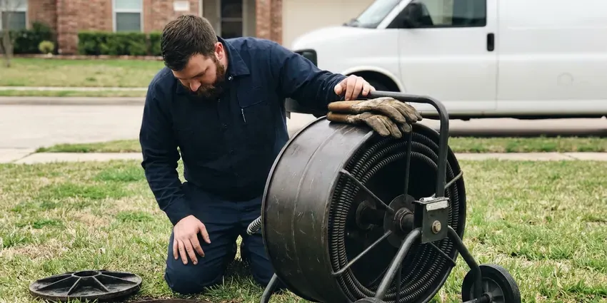
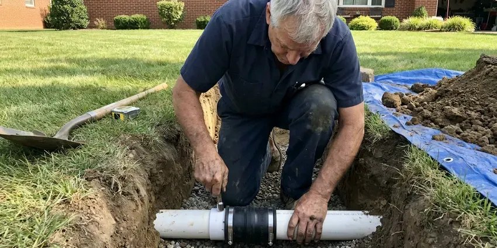

Drain Cleaning in Saginaw, MI
From greasy kitchen lines to hair-packed shower drains, our Saginaw, MI plumbers remove the blockage and show you the cause.
- No Acid or Caustic Chemicals
- Trained Drain Techs
- Licensed, Insured Plumbers
- Written Drain Warranty
Get the Drain Cleared Today in Saginaw, MI
Water backing up into the tub? Call (810) 380-5918 and we will send a tech with a main line machine.
Local Drain Cleaning Techs in Saginaw, MI
CHV Plumbing cleans drains across Saginaw using drum machines, sectional cables and, when needed, a camera to confirm the pipe is open wall to wall. We match the cutter head to the pipe size. A 1-1/2 inch sink line and a 4 inch main need different tools, and using the wrong one is how pipes get damaged.
Work we handle every week:
- Hydro jetting for grease and scale
- Drum and sectional cable machines sized from sink to main
- Cleanout access, including adding a cleanout where missing

Additional Drain Services Services in Saginaw, MI
From stubborn kitchen clogs to main sewer backups, our drain services in Saginaw, MI restore full flow fast and keep it that way.


Saginaw sewer cleaning specialists



Professional sewer line replacement, Saginaw

Customers
Why Choose CHV Plumbing for Drain Cleaning in Saginaw, MI?
Repeat clogs in an older house usually mean the pipe itself is tired. Older neighborhoods may also have lead service lines, which the state is requiring utilities to replace over time. A camera tells us if cleaning will hold. You see the problem on screen yourself, and you keep a copy of the video.
- Local Experience, Our techs work in Saginaw every day and know how soil movement and scale affect buried pipe.
- Proof on Camera, When a line keeps clogging, we run a camera so you can watch the cause on screen.
- Right-Sized Tools, Small drum machines on fixture lines and heavier sectional cables on mains keep older pipe in one piece.
Citywide Coverage
Across all of Saginaw, our drain techs work from stocked trucks. Spare cable, heads and traps ride along. That means a broken trap or a cracked tailpiece found during cleaning can be replaced the same visit without a second trip.
Experienced Team
The team at CHV Plumbing includes licensed plumbers with years on drain machines. They explain what they find. Expect a short, plain account of the cause, not a sales script.
Safety-First Approach
Safety starts with the machine. Cable machines can hurt people. Our techs use foot-pedal controls and gloves made for drain cable, and they keep pets and kids out of the work area.
Trusted Certified Saginaw Plumbing Services Professionals
At CHV Plumbing, we take pride in licensed, certified plumbing services throughout Saginaw, MI. Credentials matter in this trade. Every repair, install and maintenance visit follows strict safety and quality rules, and the plumbers doing the work carry recognized industry credentials.
Call Us Now PHCC Plumbing Contractor Recognition
PHCC Plumbing Contractor Recognition Better Business Bureau (BBB) Accreditation
Better Business Bureau (BBB) Accreditation Angi Certified Pro
Angi Certified Pro ISO 9001 Quality Management Certification
ISO 9001 Quality Management CertificationWhat Our Saginaw, MI Drain Plumbers Clean
Kitchen Drain Cleaning in Saginaw
Grease is the big one in kitchens. It goes down warm and sets up like candle wax in the pipe. Bits of food and soap catch on that coating until the 1-1/2 inch line is down to the size of a pencil, and we clear it with a drum machine that is safe for PVC and old cast iron alike.

Sink Line Grease and Scale in Saginaw
Kitchen lines clog with grease and food scraps that stick to the pipe and harden as they cool. Homes around Saginaw on private wells usually benefit from a water test before picking a filtration system, since mineral levels vary widely. Mineral buildup makes the pipe wall rough, so grease sticks faster. We run a drum machine through the trap arm or a cleanout and cut the pipe back to full width, then check the dishwasher air gap and finish with hot water.
Restaurant and Shop Drains in Saginaw, MI
Commercial kitchens fight fats, oils and grease every day. Even with an interceptor, grease builds up downstream. A regular jetting schedule, set by how much frying your kitchen does, keeps the line open, and we leave a service report you can show the health inspector or the landlord.
Camera Inspection After Drain Cleaning in Saginaw
A camera shows what the cable felt. The image stays upright as the head turns. In cast iron we often find scale, channeling along the bottom of the pipe and cracked hubs, while clay lines show offset joints and root entry, and a locator marks the depth on the surface so a repair can be dug in the right spot.
Bathroom Drain Cleaning in Saginaw, MI
Hair mixed with soap scum makes a rope that wraps around the stopper linkage. Most bath clogs sit within a foot of the drain. We pull the stopper, clear the trap and run a small cable into the branch line, and if the vent is plugged and the drain still gurgles, we check that too before we pack up.
Jetting Versus Cabling in Saginaw, MI
Cabling and jetting solve different problems. A sectional cable is built to chop and pull a clog out. Jetting strips grease and scale off the walls and carries it out of the line, so we cable first on a hard root mass and jet afterward when the line has years of buildup on it.
Tub and Shower Drain Cleaning in Saginaw, MI
Showers clog slowly, then all at once. Hair builds a mat under the strainer. We pull the strainer or cable through the tub overflow so the finish does not get scratched, and we clear the trap and the branch beyond it, then run the shower for a few minutes to confirm it drains at full speed with no gurgle.

Commercial Drain Cleaning in Saginaw, MI
Restaurants, salons and offices load drains harder than homes do. Grease, hair and paper all show up in volume. Our commercial setup includes larger cable and jetting equipment for 4 to 6 inch pipe, and we can schedule work before opening or after close so you do not lose a lunch rush to a plumber in the kitchen.
Local Drain Cleaning Near Me in Saginaw, MI
A good local drain company answers the phone and shows up in the window it gave you. We try to clear it every time. CHV Plumbing handles everything from a slow lav sink to a main line full of roots with equipment that fits each job, so you are not paying for a jetter on a hair clog.
Our trucks are stocked for sink, tub, laundry and main line work. Second trips are rare for us. A tech who works this town every week knows what kind of pipe is likely under each neighborhood, and that knowledge goes straight into picking the right tool.
CHV Plumbing at a Glance
- Licensed and insured plumbers serving Saginaw, MI
- 24/7 emergency service with same-day scheduling
- Upfront, flat-rate pricing before work begins
- 4.9-star rated by 670+ Michigan customers
Saginaw Map
Saginaw Information
- Population
- 43,185
- Area codes
- 989/517/231
- Service area
- Saginaw and communities within 40 miles
- Nearby
- Bay City, Flint, East Lansing, Lansing
Shifting ground can stress buried drain pipe in Saginaw, MI, and tree roots work into any gap in an older sewer line. Freeze and thaw cycles shift the soil around buried pipes, which can crack older clay and cast iron sewer laterals.
Talk to a Plumber
Reach out to CHV Plumbing for honest, reliable plumbing from people who know the trade in Saginaw, MI.
Our Specialized Plumbing Services in Saginaw, MI
At CHV Plumbing, you get every kind of plumbing service from one company across Saginaw, MI. From leak detection to full system installs, our team works fast and charges fair prices on homes and commercial properties alike. Explore our core services below:


Our Drain Cleaning Steps in Saginaw, MI
Our drain cleaning process in Saginaw, MI is simple: locate the clog, clear it, then test it.
Request a Quote
Call (810) 380-5918 and tell us which drains are slow or backing up. We give you a price range and a booked arrival window.
Diagnose and Clear
Your tech locates the best access point and runs the right cable or drum machine. You see what came out of the line.
Test and Advise
We run water through every affected fixture to verify full flow. If needed, we camera the line and explain any next steps.
Frequently Asked Questions About Drain Cleaning in Saginaw
Standard clogs in Saginaw, MI run about $150 to $500. Main lines cost more. Hydro jetting or a heavy main line blockage can run $400 to $800 or a bit more if there is no cleanout, and we price it after seeing the job.
Roots follow moisture. A sewer line leaks a little vapor at every loose joint. Fine root hairs find those gaps, grow inside the pipe and thicken into a mat that catches paper and waste, and clay and older cast iron lines near mature trees are the most common victims.
On a repeat clog, yes. Home buyers should too. The footage shows any crack, belly or root entry, which tells you if the cleaning will last.
Usually yes. Cleaning needs none. When we install a cleanout or replace pipe, we get whatever permit your city requires and schedule the inspection.
Single fixtures take 1 to 2 hours. Mains take 3 or 4. A jetting job or a big root intrusion can stretch to 4 hours when access is tight or there is no cleanout.
No permit is needed for routine drain cleaning. Repairs are different. If the work goes beyond clearing, like new pipe or a cleanout, we will let you know about any permit first.
Standard drain cleaning does not need a permit in Saginaw, MI. Follow-up repairs might. Should cleaning reveal damaged pipe, the replacement work may require a permit, and we handle that paperwork.
Enzyme products are fine for upkeep. The harsh ones are risky. Lye and acid cleaners can corrode older pipe, and if they do not clear the clog, they leave a pool of chemical in the trap for whoever opens it.
What Our Customers Say About Our Plumbing Experts

Carlos V.
Our house still had galvanized pipe, and upstairs the shower was a trickle. The crew repiped everything in PEX over three days and patched every drywall hole before they left. The pressure difference is night and day.
Repiping · Flint, MI
Karen W.
After our third pinhole leak in copper, we stopped patching. CHV Plumbing gave us a written plan room by room and repiped the house in PEX while we stayed in it. The crew covered our floors every morning and cleaned up every night.
Repiping · Rochester Hills, MI
Robert G.
The camera showed a full break in our clay sewer line near the street. CHV Plumbing replaced it with a trenchless pipe burst, so the only digging was two small pits in the yard. They let us watch the footage before and after.
Sewer Line Replacement · Flint, MI
Brian W.
I smelled gas behind the dryer and called right away. The plumber found a corroded flex connector, replaced it, and pressure tested the whole line before turning the gas back on. He let me watch the gauge hold steady for fifteen minutes.
Gas Line Repair · Flint, MI
Sofia M.
Two new toilets went in during one visit. The tech set them on new wax rings and swapped the old supply lines. He also noticed our bathroom faucet dripping and replaced the cartridge while he was there. No mess left behind.
Toilet Installation · Rochester Hills, MIJessica T.
We were adding a gas range in a kitchen remodel and needed a new line run from the meter. The plumber pulled the permit, ran the pipe through the crawl space, and had it inspected and approved within the week.
Gas Line Repair · Lansing, MI